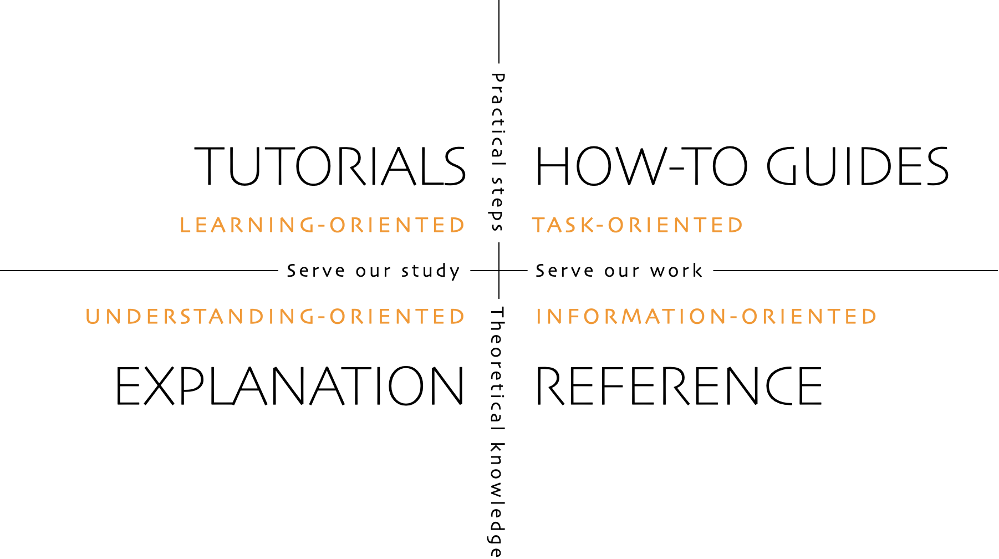
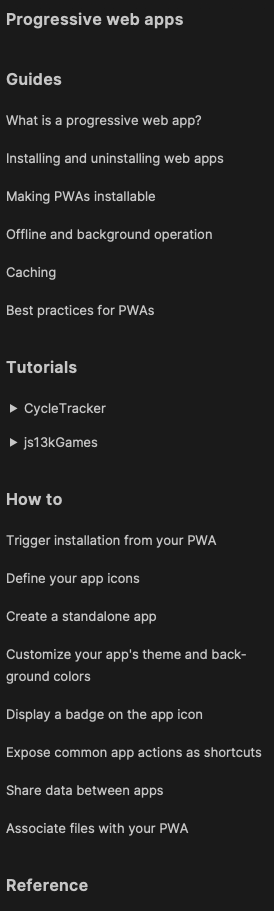

Documentation for web security education
Open Web Docs
About us
- Will Bamberg & Florian Scholz
- Technical Writers at Open Web Docs
- https://openwebdocs.org
What is Open Web Docs?
An organization employing technical writers to maintain and extend web documentation
Why Open Web Docs?
- Web platform documentation is critical digital infrastructure
- Web developers need access to good quality documentation
- Good documentation depends on dedicated professional writers and documentation engineers
Sponsors
 Canva
Canva
 Google Open Source
Google Open Source
 Igalia
Igalia
 JetBrains
JetBrains
 Microsoft Edge
Microsoft Edge
...and 179 individual financial supporters.
Staff
- Estelle Weyl @Estelle
- Florian Scholz @elchi3
- Jean-Yves Perrier @teoli2003
- Vinyl Da.i'gyu-Kazotetsu @queengooborg
- Will Bamberg @wbamberg
We mostly work on MDN...
What is MDN?
- The top destination for developers to learn about web technologies
- An open source project, whose content is CC-BY-SA licensed
- Owned by Mozilla, who employs the developers and a team of writers.
- The second most-cited docs site on Stack Overflow, after docs.microsoft.com (source)
What does MDN include?
About 11,000 pages, including:
- JavaScript (1000 pages)
- CSS (1000 pages)
- Web APIs (6000 pages)
- HTML (250 pages)
- HTTP (250 pages)
- Web/Security (19 pages)
Open Web Docs and MDN
We contribute to mdn/content in 2 ways:
- Day to day maintenance
- Projects
Projects
- Anyone can file a project proposal
- github.com/openwebdocs/project/issues
- Steering Committee helps guide decisions:
Apple
Coil
Google
Meta
Microsoft Edge
Canva
Igalia
JetBrains
Mozilla
Samsung Internet
W3C
Selected projects
- Markdown conversion
- WebXR documentation
- Code sample modernization
- ARIA role documentation
- PWA documentation
- ... Security documentation?!
Security docs on MDN
What we have:
- 19 pages
- No organization
- No navigation
- No user journey
Security docs on MDN
What we want:
 © Daniele Procida. diataxis.frPWA docs on MDN
Exploring a new content structure
- Tutorials (learning)
- How-Tos (problem solving)
- Guides (understanding)
- Reference (information)
Reminder: Survey results
Understanding security threats
69% very/somewhat challenging
Understanding the browser security model
66% very/somewhat challenging
Guides
A guide is an explanation (a discussion) that illustrates and clarifies a topic.- Browser security model
(e.g. Same-origin, Secure Contexts, User Activation) - Defense mechanisms
(e.g. CSP, SRI, HTTPS, TLS) - Attack vectors
(e.g. MITM, XSS, CSRF)
How-Tos
Steps required to solve real-world problems.- How to use a web platform feature
(e.g. TLS, HTTPS, CSP) - How to protect against an attack
(e.g. MITM) - How to implement a site feature securely
(e.g. login, sending form data). This requires 1. and 2.!
Tutorials
Lessons taking the reader by the hand to complete a project.- Steps to implement a secure auth
- The path to enabling a strict CSP
Reference docs
Technical descriptions for all features in all details.- All CSP directives
- Types of attacks
- Security related HTTP headers
- ...
Discussion
- Can restructured docs help?
- Create a content outline accordingly?
- Participate in the Google doc?
How can you help?
- Follow us front-end.social/openwebdocs
- Propose projects
- Participate in OWD project work
- Ask your employer to sponsor us
Thanks!
- florian@openwebdocs.org
- will@openwebdocs.org
- https://openwebdocs.org